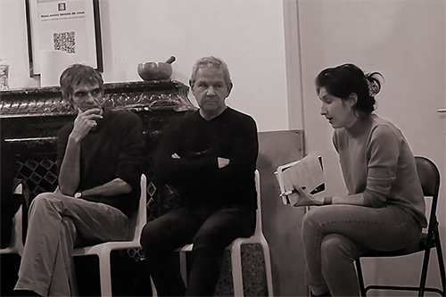
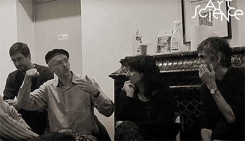

De gauche à droite, François-David Collin, Sabrina Issa et Nicolas Bralet, présentation des recherches du LAAB, Laboratoire Associatif d'Art et de Botanique, Non-conférence, Montpellier, 2022.
Rencontre / PENSER, SENTIR COMME UN ARBRE
Dans le cadre du cycle de rencontres Arts&Sciences face aux enjeux socio-écologiques Dispositif de rencontre Arts Sciences Société, organisé par non-conférence.
Cet événement aura pour but d’explorer comment les arts, la culture et la science ont recours à la dimension sensible pour revoir notre place et celle des arbres dans le monde d’aujourd’hui. Des artistes et chercheur.e.s présenteront leurs travaux et vous parleront de leur démarche d'articulation de l'art et de la science. Il.elle.s engageront le dialogue avec le public sous la forme d'un atelier interactif.
Avec les interventions de Jacques Tassin, chercheur écologue au Cirad de Montpellier, de Dominique Nicolas est artiste plasticien et anciennement sélectionneur de variétés d’arbres tropicaux au Cirad de Montpellier et du LAAB, Laboratoire Associatif d'Art et de Botanique avec Nicolas Bralet, Francois-David Collin et Sabrina Issa.
Modération Charlotte Mariel.
De gauche à droite, Nicolas Bralet, François-David Collin et Sabrina Issa pour le LAAB, Laboratoire Associatif d'Art et de Botanique, Non-conférence, Montpellier, 2022.

De gauche à droite, Jacques Tassin, Dominique Nicolas et Charlotte Mariel, Non-conférence, Montpellier, 2022.

De gauche à droite, Nicolas Bralet, François-David Collin et Sabrina Issa pour le LAAB, Laboratoire Associatif d'Art et de Botanique et Jacques Tassin, Non-conférence, Montpellier, 2022.